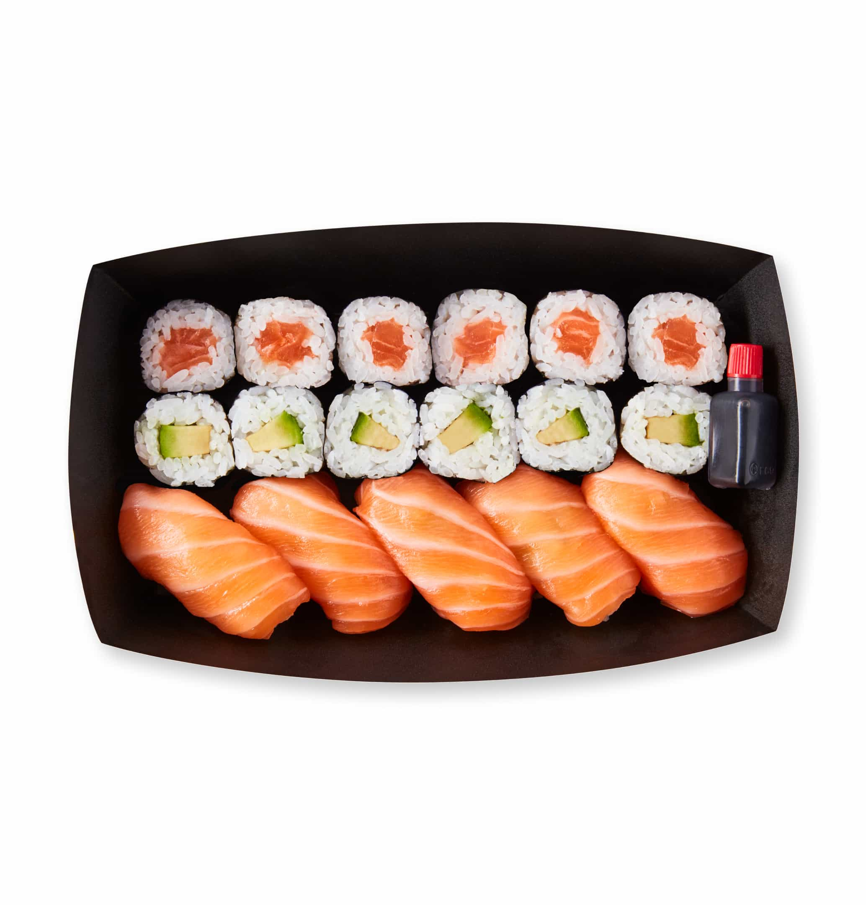

Sushi

Sushi is a traditional Japanese dish of prepared vinegared rice, usually with some sugar and salt,
accompanied by a variety of ingredients, such as seafood, often raw, and vegetables.
Ingredients
- Sushi rice
- Rice vinegar
- Nori (seaweed sheets)
- Fresh fish (salmon, tuna)
- Cucumber
- Avocado
- Soy sauce
- Wasabi
Steps
- Rinse and cook sushi rice according to package directions
- Mix cooked rice with vinegar, sugar, and salt
- Let rice cool to room temperature
- Prepare fillings by cutting fish and vegetables into thin strips
- Place nori sheet on bamboo mat
- Spread rice evenly over nori, leaving space at one end
- Add fillings in a line across the rice
- Roll tightly using the bamboo mat
- Cut roll into bite-sized pieces with a sharp knife
- Serve with soy sauce, wasabi, and pickled ginger
Home